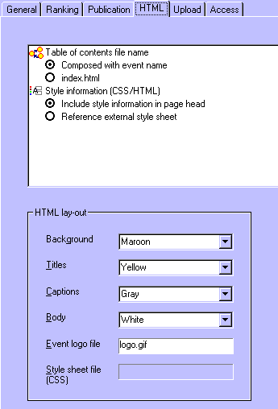

Through in the menu, and then choosing for the HTML tab, you can edit the settings that specifically apply to the the generation of HTML files.

Note that this section particularly covers HTML specific markup, rather than the content for publications which is covered by the publication settings.
The following HTML settings can be made:
Set:
Enter:
Note that some colors that you can choose might look good on screen but are very hazy when printed.
Note that when you provide a link, you should provide a sufficiently qualified URL or path. You can just enter the file name, in which case the file is assumed to be in the same folder as the publications. But you can also enter a full internet address of the file or an directory path to it. Note that when you provide a local or even networked directory path, the file is likely not to be accessible when other users view your publications over the internet.